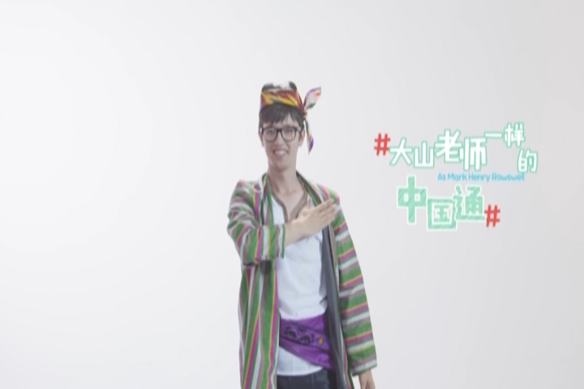
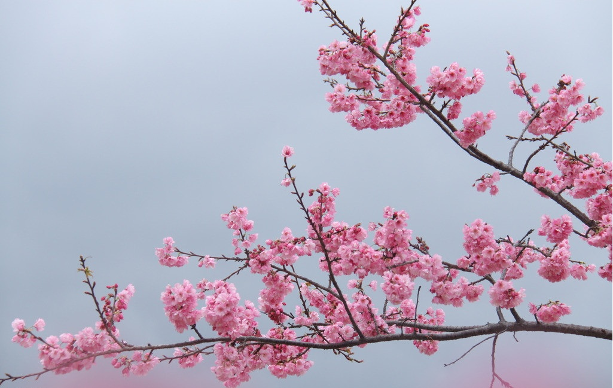

2016-10-21阅读（3,362）

【跟着选手学演讲】
出场宣言：
我叫内藤优香。笑容是我最大的魅力。
精彩段落：
我今天带来的礼物是一本画册，这本画册专门介绍日本的樱花。樱花自古就为日本人所喜爱，尤其是日本的祖先，不但酷爱樱花地盛开也热爱樱花地飘落，表现了日本人特有的情趣。我的名字优香，也来自樱花的美丽和芳香。所以欢迎今天在座的各国友人。如果有机会在春天来东京外国语大学欣赏樱花的美丽和芳香，但愿日本的樱花会成为连接中国日本以及世界各国的花环。

出场宣言：
我叫康晓鑫。我想成为大山老师一样的中国通。
精彩段落：
乌兹别克斯坦是著名的丝绸之路古国，我出生在丝绸之路上的璀璨明珠撒马尔罕。大家请看我手中这个精致的盘子，这幅图片就是撒马尔罕的中心。我们那儿的人非常热情，我们去作客的时候，一般要带着两个馕去，还要给家里的小孩儿送上小礼物或小点心，让他们开心。如果你是一个“吃货”，那一定要来乌兹别克人家里做客，而且必须饿着肚子来，大家知道为什么吗？我告诉你们，因为乌兹别克人会让你品尝各式各样的美食，让你吃上三四个小时不重样。今天我送给汉语桥的一件小礼物就是产自撒马尔罕的一盘干果，美食，里面有葡萄干儿杏干儿豌豆干儿甜瓜干儿开心果等等。所有这些干果都是纯天然绿色无污染的，没有任何添加剂，可以敞开肚皮放心吃，大胆吃。
出场宣言：
我叫玛丽亚。我想把博大精深的中医传遍世界。
精彩段落：
我带给汉语桥的小礼物是雪松木雕和古城堡模型。雪松是黎巴嫩的国树，终年常绿是不可多得的名贵木材。我生活的城市西顿，位于黎巴嫩南部的地中海沿岸，是世界上最古老的城市，在西顿的滨海大道上，伫立着几座十三世纪由十字军建立的海上城堡，虽然几经战火和地震，但仍然保存至今。看着它那雕刻着不同花纹及生动猛兽的石头，人们仿佛走进了历史。感谢汉语桥，为我们搭建了不同文明相互沟通的桥梁。我希望将来的某一天，我也能成为一个中国通。
出场宣言：
我叫魏凯蒂。小个子有大能量。
精彩段落：
中国歌曲《茉莉花》是一首享誉中外的经典歌曲，我非常喜欢这首歌。因为茉莉花不论是在中国还是在泰国，都有着很多美好的象征。如果你问泰国人看到茉莉花会想到什么，百分之百的泰国人会说“母亲”。因为茉莉花是泰国母亲节的象征物品，茉莉花纯白的颜色就像母亲纯净真诚的爱。这次到中国参赛，我特意准备了一枚茉莉花胸针送给汉语桥。因为这舞台让我感觉到母亲的爱，汉语桥无私地为全世界搭建了传播文化增进友谊的桥梁。我希望美丽的茉莉花永远盛开，芬芳天下。
【礼物扫描】
樱花

花，起源于中国。据日本权威著作《樱大鉴》记载，樱花原产于喜马拉雅山脉。被人工栽培后，这一物种逐步传入中国长江流域、中国西南地区以及台湾岛。秦汉时期，宫廷皇族就已种植樱花，距今已有2000多年的栽培历史。汉唐时期，已普遍栽种在私家花园中，至盛唐时期，从宫苑廊庑到民舍田间，随处可见绚烂绽放的樱花，烘托出一个盛世华夏的伟岸身影。当时万国来朝，日本深慕中华文化之璀 璨以及樱花的种植和鉴赏，樱花随着建筑、服饰、茶道、剑道等一并被日本朝拜者带回了东瀛。
由于日本樱花过于出名，他们曾培育出冠绝世界的品种，所以樱花一定程度上指日本樱花，或具有日本特色的樱花品种。喜马拉雅的樱花传往日本后，在精心培育下不断增加品种，成为一个丰富的樱家族。成为日本国花后，它更受关爱，也更受培养，出现观赏性更强的高等品种。
雪松
雪松是松科雪松属植物。常绿乔木，树冠尖塔形，大枝平展，小枝略下垂。叶针形，长8-60厘米，质硬，灰绿色或银灰色，在长枝上散生，短枝上簇生。10-11月开花。球果翌年成熟，椭圆状卵形，熟时赤褐色。产于亚洲西部、喜马拉雅山西部和非洲，地中海沿岸，中国只有一种喜玛拉雅雪松，分布于西藏南部及印度和阿富汗。分布于阿富汗至印度，海拔1300-3300米地带，中国多地有栽培。
雪松是世界著名的庭园观赏树种之一。它具有较强的防尘、减噪与杀菌能力，也适宜作工矿企业绿化树种。雪松树体高大，树形优美，最适宜孤植于草坪中央、建筑 前庭之中心、广场中心或主要建筑物的两旁及园门的入口等处。其主干下部的大枝自近地面处平展，长年不枯，能形成繁茂雄伟的树冠，此外，列植于园路的两旁，形成甬道，亦极为壮观。

【有关汉语桥】
“汉语桥”是由孔子学院总部/国家汉办举办的国际中文赛事，是世界人文交流领域的知名品牌活动 。“汉语桥”中文比赛已成为外国学生学习汉语，了解中国的重要平台，在中国与世界各国青年之间架起了一座沟通心灵的桥梁。